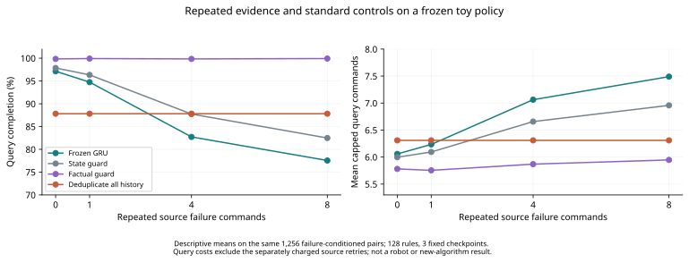

40
3
0

- C15
- C21
- C12
Complete candidate drafts · All 40 verdicts · Direct-prior body audit · Memory/inference audit · Formal setting

Complete candidate drafts · All 40 verdicts · Direct-prior body audit · Memory/inference audit · Formal setting